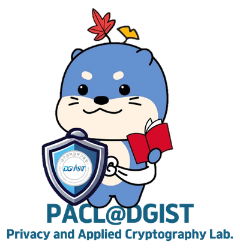

My research focuses on side-channel analysis and the implementation security of cryptographic systems. I study how secret information leaks from devices through physical channels such as power consumption, and how countermeasures that look sound on paper can fail, or even backfire, when they meet a concrete attacker model. My recent work centers on post-quantum cryptography (PQC), in particular code-based schemes: our Asiacrypt 2026 paper shows that codeword masking, a widely used countermeasure in HQC implementations, can actually be harmful under replay attacks, and analyzes the conditions under which it reduces rather than improves security. I have also worked on PQC implementations on constrained devices (ARM Cortex-M4), and on coding-theoretic tools for robustness, which led to a paper accepted to NeurIPS 2026.
My long-term goal is to become a recognized expert in side-channel analysis and to grow outward from it into computer architecture, networking, and coding theory, so that the security of a cryptographic system can be assessed end to end, from the algorithm down to the silicon.
Asiacrypt 2026 will be my first time presenting at an IACR flagship conference. I am a first-year Ph.D. student, and this paper is the first work I have led from the initial observation to the final analysis. Presenting it in person to the researchers who design, implement, and attack code-based schemes is the most direct way to test our claims, to learn which assumptions the community finds convincing, and to understand which follow-up questions matter most. Since HQC was selected by NIST for standardization, the question of which countermeasures are safe to deploy has become urgent, and I expect the discussions around our result to shape the next steps of my thesis.
Beyond my own talk, Asiacrypt is where the PQC, implementation-security, and side-channel communities meet. My lab is relatively small and geographically distant from most of these groups, so a few days of conversations at the conference are worth months of reading papers alone. I also mentor undergraduate research teams at DGIST and help organize our lab's cryptography summer camp, so what I learn at Asiacrypt will be passed on to students deciding whether to pursue cryptography.
I would be grateful for the opportunity to present our work and to take part in the conference in person. Thank you for considering my application.

To the Asiacrypt 2026 Student Stipend Committee
Re: Letter of support and justification of financial need for Jaeho Jeon
I am writing to support the student stipend application of my Ph.D. student, Jaeho Jeon, who will present the paper “Codeword Masking Can Be Harmful Under Replay Attacks on HQC” at Asiacrypt 2026 as its first author.
Jaeho joined my laboratory as a master's student in 2024 and began his Ph.D. in February 2026. He works on side-channel analysis and the implementation security of post-quantum cryptography. The Asiacrypt paper is his own initiative: he noticed that a standard countermeasure for HQC behaves unexpectedly under replay attacks, developed the analysis, and carried the work through to acceptance. He is also a co-author of a paper accepted to NeurIPS 2026 and received the Grand Prize of the 4th KICS HFR Paper Award in 2026. In addition to research, he mentors undergraduate research teams, one of which won two national-level awards for a PQC implementation on ARM Cortex-M4 under his guidance, and he organized our lab's AI & Crypto Summer Camp this year. He is exactly the kind of early-career researcher who benefits most from presenting at, and meeting the community of, an IACR conference.
Supplementary funding. Jaeho has applied for the student presenter registration fee waiver. For his travel and accommodation in Hong Kong, the laboratory will contribute up to [maximum amount in USD]; no further institutional travel funding is available for this trip. I would appreciate the committee's support for the remaining cost.
I am confident that Jaeho will make full use of the opportunity, and that his participation will benefit both his development and the discussion of countermeasures for code-based PQC at the conference. Please do not hesitate to contact me if any further information is needed.
Sincerely,